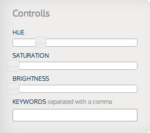
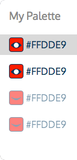
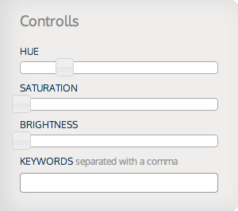

Try it here
How is it used?
The controls panel has thre silders that will allow your to adjust hue, saturation and brightness. This results are relatie to your base colors so the harmony remains constant even if the color changes.
Use keywords to narrow your results by subject.
The code
You just need a couple lines of code to get everything running.
-
Step 1: Copy the following script into your <head> tag:
<script src="http://www.parashutter.com/js/api.min.js"></script>
<script> $(function(){ parashutter.analyze(); });</script> -
Step 2: Instead of using images use divs, and give them the class="parashutter-img":
<div class="parashutter-img"></div>
If done correctly your webiste will display an image brought from shutterstock.com.
The ParaBar
Hovering over an image will reveal the ParaBar. This tool will enhance the functionality of your image finder:
Navigating your Results
The next button will load another image based on your previous search, the back button will return the previous visited image. The love button will add this picture to your gallery, click again to remove. Will open up a gallery with all the pictures you have liked for that specific space, and will allow you to switch between them The email button will allow you to email a snapshot of the website with the current picture selection. When you decide on the right picture for your website you can click the buy button to go to shutterstock.comAdjusting your search
By clicking on the settings button, you will reveal the parameter adjustment tool that you can use to improve your search. The panel on the left will allow you to turn your basic colors on and off. The results are choose randomly one of the active colors to display a certain image.The controls panel has thre silders that will allow your to adjust hue, saturation and brightness. This results are relatie to your base colors so the harmony remains constant even if the color changes.
Use keywords to narrow your results by subject.